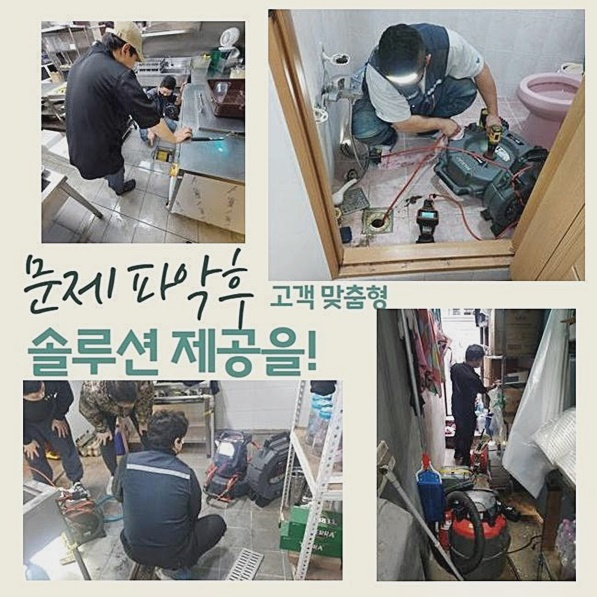
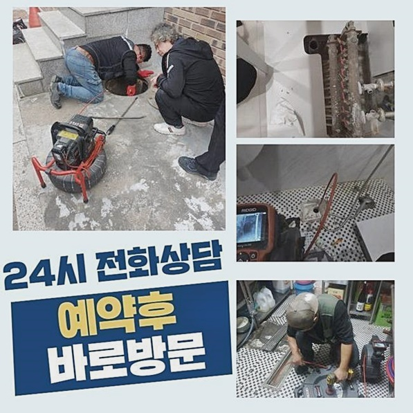
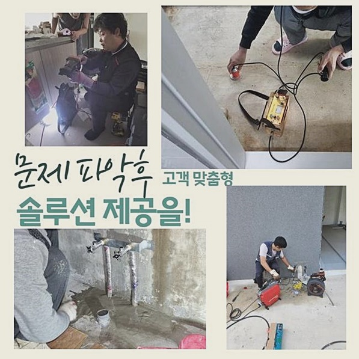
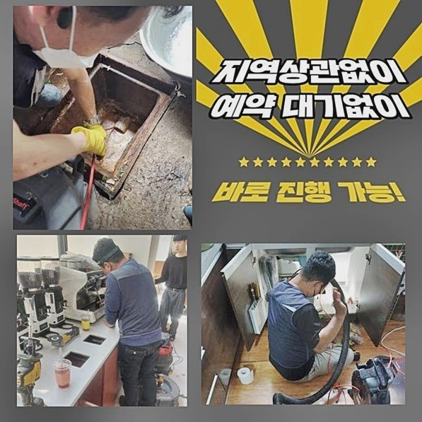
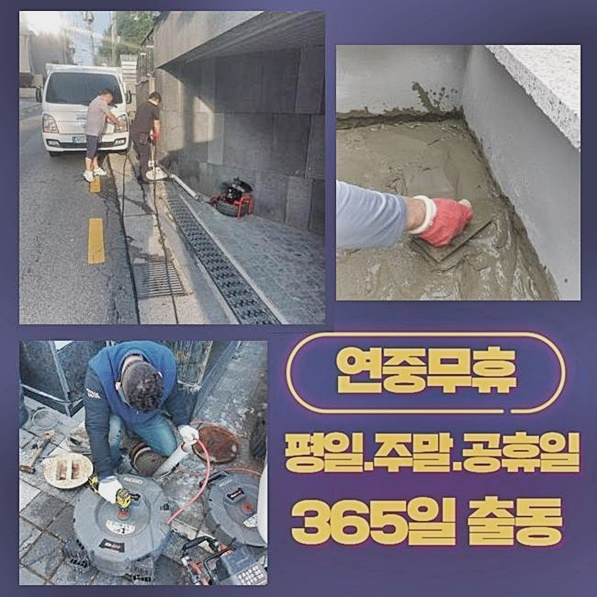
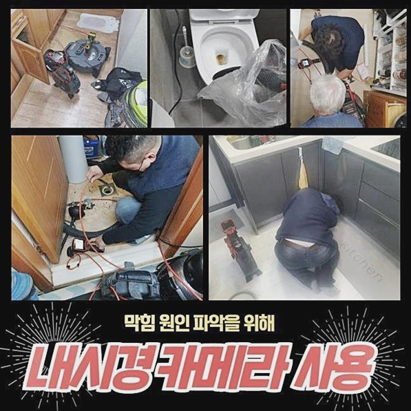
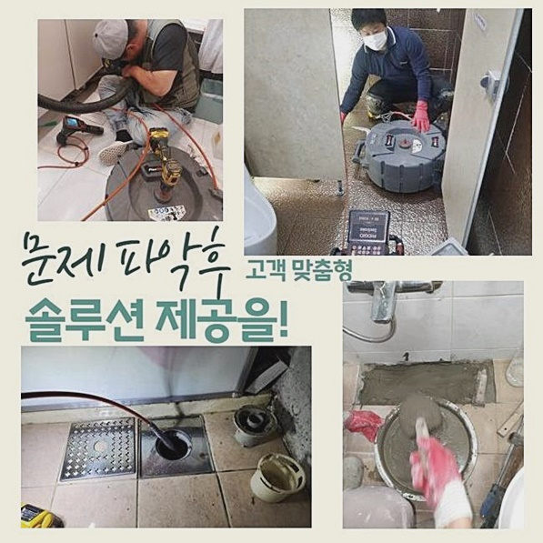

🏠 수정구 수진동 화장실하수구청소 단대동 변기악취차단
용인 싱크대막힘 전문 시공 후기

📋 작업 개요
- 위치: 용인
- 서비스 유형: 싱크대막힘, 변기막힘, 하수구막힘, 배관막힘, 역류해결, 배관청소, 악취차단
- 작업 일시: 2024. 6. 3. 9:49
- 업체명: 하수구수사대 (010-5615-2118)
🔍 문제 상황
수정구 수진동 화장실하수구청소 단대동 변기악취차단
하수구들이 제 기능들을 잃는다면 기본적인 생활양식을 이어나가는데에 곤란이 밀려올거에요
금일엔 하수관에 결함이 생긴 사례로 여러방면에서 안내해드릴테니 천천히 살피면 좋으실거에요
그렇다면 설명을 드려볼게요
집에서 발발하는 증세로 화장실공간의 배수가 안되는 문제들을 들어볼 수 있겠죠
또한 주로 세탁관련 전자제품이 자리한 장소일 경우 배수가 이뤄질때 머리카락이라던지 먼지처럼 가지각색의 잔여물이 흘러가서 배수관을 막아서는 현상들이 자주 생겨나요
배수관이 막혀버렸을 경우에 연결된 안에서 역류되는 문제들이 생겨나고 구간마다 오염원들이 꽉 찬 문제를 예측해볼 수 있는데요
내방한 고객님댁에선 화장실공간서 수도를 흘려보내면 세탁기가 있는 장소로 하수들이 역류해버리는 상태다라며 도움요청을 하셨습니다
저희의경우 오래도록동안에 배관 관련문제를 시정하기에 일반적으로 현장을 예상하고 진찰을 시작하죠
출장 시 사용될 기기를 구비하고 현장들에 당도했어요
집에서 배관들이 막혀버리는 사안은 빈번하므로 하나의 원인이다 설명이 안되나 대체로 머리카락뭉치와 슬러지들을 꼽게됩니다
질긴 머리카락들과 고착물이 뒤섞이면 딱딱해져 배수관을 막아서버려요

🔎 원인 분석
💡 전문가 진단: 정밀 진단 장비를 사용하여 슬러지의 고착 여부를 판명하고 타격/세척 작업을 실시했습니다.
또한 한 군데가 말썽을 피워 여타 구간들에도 악영향들을 미치는 경우일땐 수리가 만만치않아져요
기기사용없이 해결들이 쉽지않으므로 전문적인 접근이 동반되어야한다고 말할수있죠
도착한 뒤 다용도공간으로 들어가니 배수구멍 밖으로 넘쳐있는 오물들을 확인할 수 있었는데요
냄새들을 풍기는걸 확인해보았더니 오래도록 잔해물이 쌓이게되어 막힘을 유발한것으로 보았습니다
다양한 고착물들이 유독 심각하다는걸 즉시 알고자했어요
하수관에 석션장치를 투입하고 부유물 제거를 진행해보고자 했습니다
기대는 하지않았으나 생각한대로 뚜렷한 해결은 보지 못했어요
그저그런 상태일때 석션장비로 문제를 바로잡는게 되는 상황들도 존재합니다
하지만 이곳의 문제들은 간소하게 해결할 수 없어 샤프트기 운용을 하기에 이르렀는데요
하지만 즉시 샤프트를 무턱대고 쓸 때는 하수도를 악화시키므로 안쪽을 내시경장치로 진단을 거치고 작업하기로 했어요
내시경장비를 써서 배수관을 오염시키는 머리카락이나 여타 이물을 파악해보았습니다
당연히 긴 기간동안에 누적되어 여기저기 녹아든 상태였고 슬러지성분으로 변해서 수월하게 배출되지 않은것이에요

🔧 작업 과정
일반적으로 슬러지의 경우 싱크대와 이어진 배수구멍 밖으로 보여지나 세탁기에서 발생되는 이물질들도 퇴적되어 문제를 일으키는 사례들도 있는데요
이물들이 쌓이면서 내측이 건조되는 상황으로 재빨리 석회로 변하고 머리카락들과 엉키면 증상을 바로잡는게 어려울 수 있어요
내시경기기로 점검했던 이물의 경우 예상보다 심부에까지 자리잡았고 흡착률이 높아 석션만을 이용해선 시정이 어려웠던 것입니다
배관입구를 너머 역류된 이물들을 제거한뒤 안쪽을 배출해내 이후에 작업에 있어서 도움이 되는 환경들을 만들어냈죠
슬러지들과 석회성분을 청결하게 제거시키는 샤프트장비들을 꼽게됩니다
샤프트의 경우 머리쪽에 사슬들이 연결되어있기에 벽면의 여타 이물을 타격하게 되죠
라인들을 안으로 투입해 제거시키는 메커니즘을 가지고 있어 깊숙한 구간까지 문제없이 분쇄를 진행해요
반대로 노커부분이 깊숙히 붙어버린 여타 이물을 끄집어내는 것으로서 손상의 위험들도 염두에 두어야 하겠습니다
위와같은 이유에서라도 내시경으로 안측을 계속해서 관찰한 다음 청소를 실시하고 있어요
샤프트를 써서 청소가 덜 된 이물청소에 가속화를 시켰어요
제거작업 중에 샤프트헤드쪽에 붙어서 배출된 머리카락까지 보았는데요
발코니부분의 오염물을 분쇄하고 안쪽에 잔존하는 이물들은 석션장치로 흡입시켜 문제없이 원상복구시켰어요
욕실쪽 문제도 바로 잡을 목적으로 화장실의 배수관을 진단하였고 이전처럼 스케일링과정을 시작했어요
점검 결과 통수불능 문제들과 물솟음이 발생된 사안으로서 내시경으로 안쪽을 봐야했는데요
이전과같이 머리카락들과 고착된 오염원을 내시경장비를 써서 알 수 있었죠
스케일링을 하면서 제거시킨 이물들의 양들도 많았습니다
배관속에는 고착화가 발생되었고 노후도 진행되어 시간들이 의외로 꽤 걸렸죠
이러한 이물들이 배수라인을 막은 탓에 밑으로 빠져나가는 틈들이 없는 것으로 판단했어요
최종적으로 욕실내부와 발코니 개별적으로 배수검열을 시행했죠
통에 물들을 충분하게 받아두고 배수구로 흘려보냈고 잘 빠지는 상황까지 확인할 수 있었죠


✅ 작업 완료
오차없이 내방한 고객님의 댁에서도 깔끔히 해결했습니다
혹여 막히게되었거나 역류등이 발생해 난처하신 의뢰인분이 계시면 어렵지않게 저희들에게 연락주셔서 수리를 이행해보시길 권해드립니다
어디여도 한시간안팎으로 달려가고 실시하는 과정을 전부 공개하므로 걱정은 붙들어 매세요!
예상치못하게 생겨버린 배수장애를 내버려두시지않고 증세를 눈치챘을때 저희의 전문진과 바로 잡아보세요!
또한 궁금하신게 있으시면 이것저것 질문하셔도 환영이니 편하게 연락하시면 상냥하게 맞이하겠습니다




⚠️ 주방 싱크대 배관 막힘 예방 수칙
- ✅ 기름기가 묻은 식기나 프라이팬은 설거지 전 키친타올로 반드시 기름때를 닦아내세요.
- ✅ 주기적으로 싱크대 개수대에 뜨거운 물을 가득 받아 한 번에 내려 배관 내부 기름을 씻어내세요.
- ✅ 배수구 거름망을 미세한 필터로 사용하시고 음식물 찌꺼기가 틈으로 새어 들지 않게 관리하세요.
- ✅ 베이킹소다와 식초를 뜨거운 물과 함께 일주일에 한 번씩 부어주면 배관 살균과 막힘 예방에 좋습니다.
💡 핵심 정리
- 확실한 장비 작업(내시경 점검 및 샤프트 스케일링)으로 원인을 뿌리 뽑습니다.
- 작업 후 1년 이내에 동일한 부위 재발 시 100% 무상 A/S 서비스를 보장합니다.
- 서울 · 경기 · 인천 전 지역에 24시간 언제든 긴급 출동할 수 있도록 항시 대기 중입니다.
❓ 자주 묻는 질문 (FAQ)
🚨 용인 싱크대막힘 문제로 고민이신가요?
정확한 원인 진단과 확실한 시공으로 재발 없는 해결을 약속드립니다.
24시간 긴급 출동 | 서울 · 경기 · 인천 전지역 | 1년 내 재발 시 무상 A/S